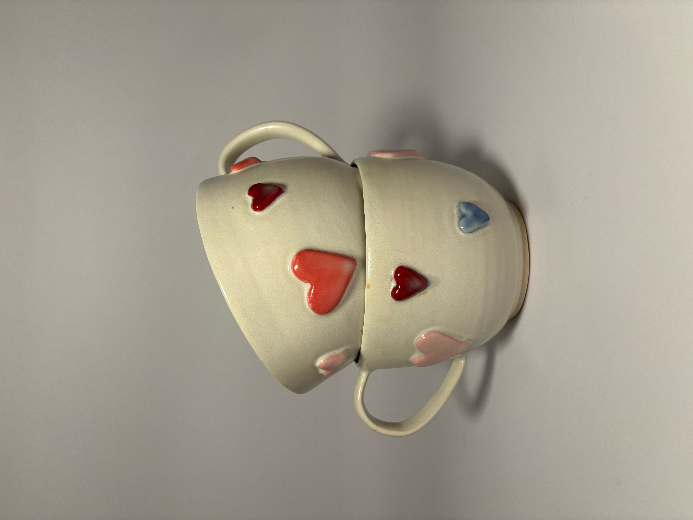
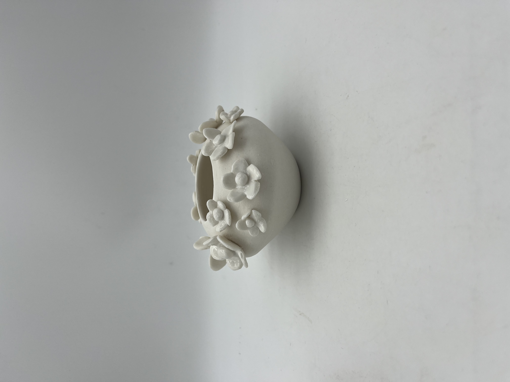
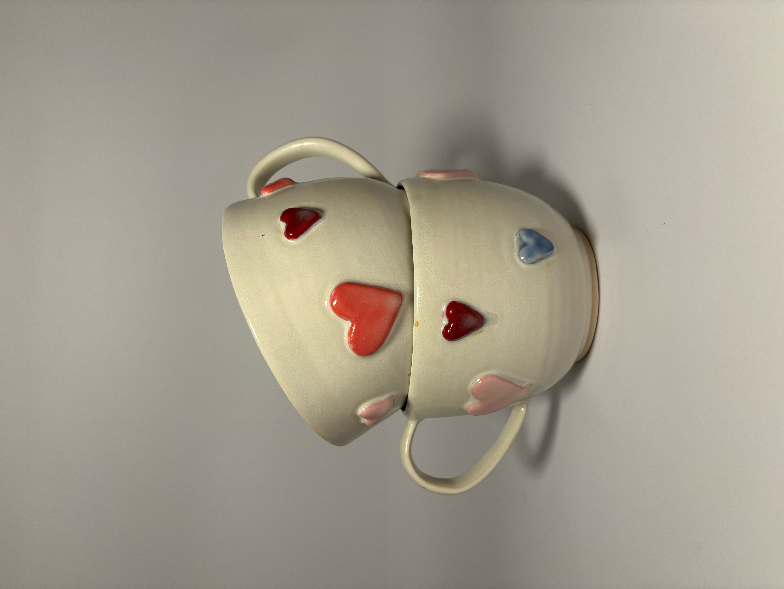
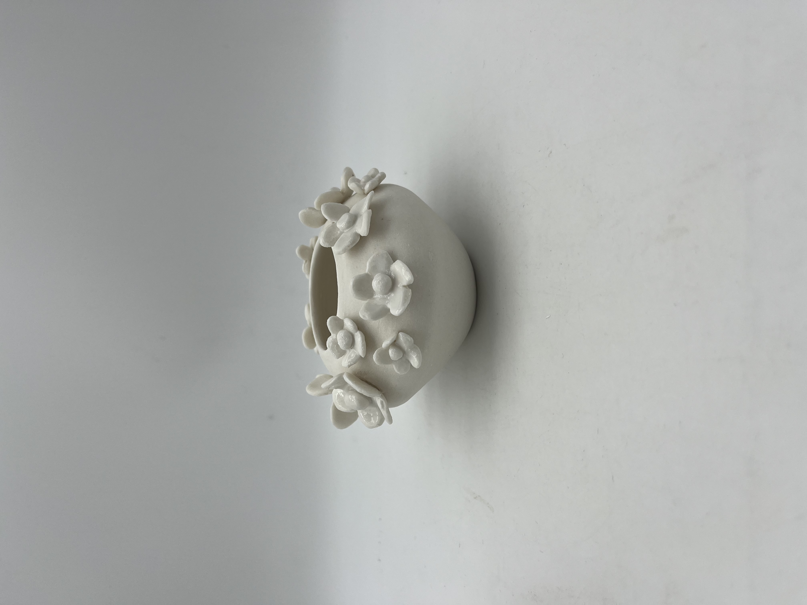
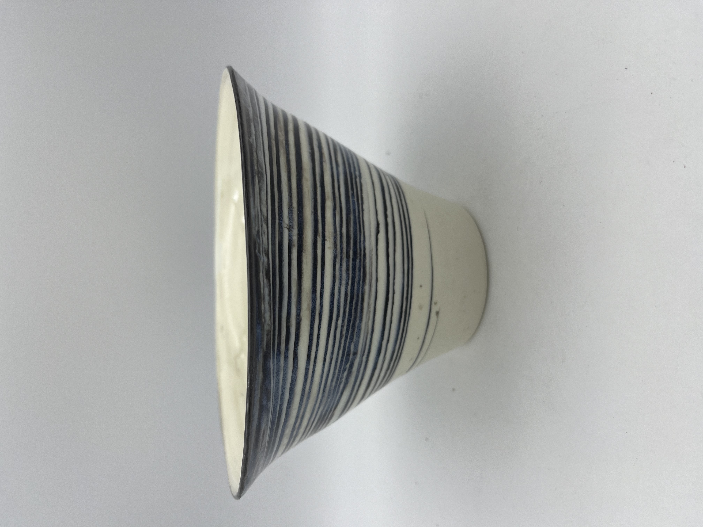
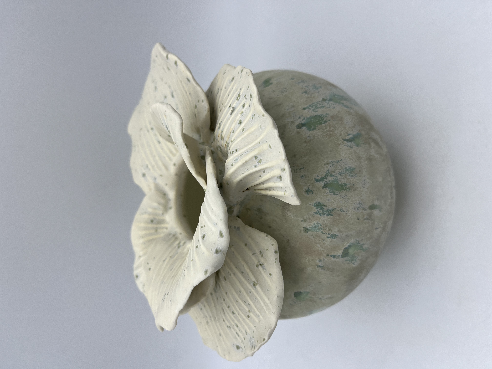
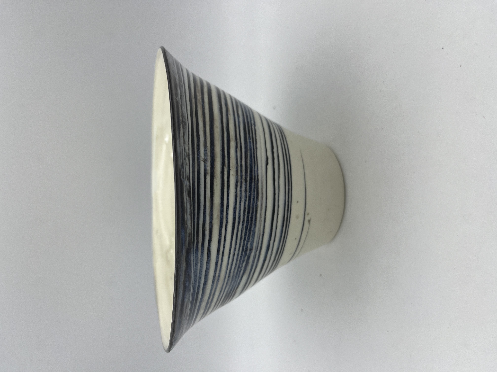
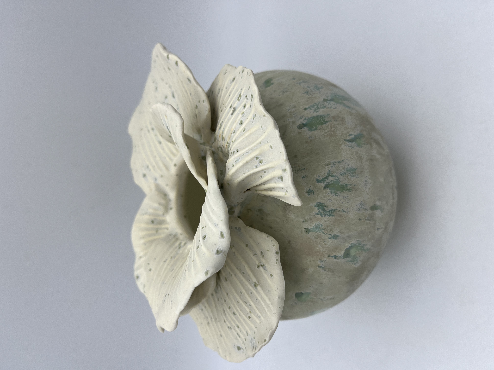

Elisabeth Kalbfuss is a ceramic artist based in Toronto, Ontario, working out of Creative Clay Studio.
Originally from Montreal, she caught the pottery bug in the 1990s, taking classes at the Visual Arts Centre in Westmount. There, she was fortunate to learn from noted Quebec clay artists like Audrey Killoran, and Milan and Eva Lapka, who in addition to producing their own remarkable work, shared their passion and technical skills with hundreds of students, both hobbyists and budding professionals.
After a long dormant period, Liz returned to the studio to rekindle her love affair with clay, creating both functional ware and decorative objects. Her inspiration comes from the clay itself, and the infinite possibilities different types of clay present both in structure and construction and then in its decoration. Each clay body, from grogs and stoneware to delicate porcelain demands its own range of technical skill to bring the artist’s vision alive.
 



 


